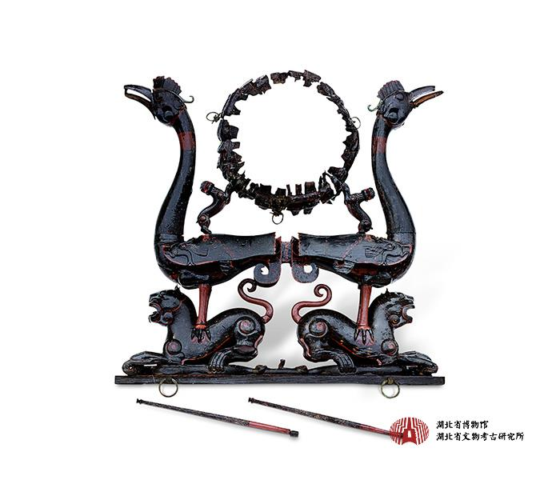

战国 · 九连墩二号墓
虎座鸟架鼓
从形与色，读懂虎、鸟与鼓的组合。
NO. 001 湖北省博物馆藏

木 · 漆 · 彩绘通高 135.9 cm
＋ 点击光点，从一处细节开始
移动光，发现一处未曾留意的细节
正在展开母题之间的联系…
形态 · 色彩 · 组织 · 意象 · 语境从具体器物出发，理解视觉要素之间的关系。
从形与色，读懂虎、鸟与鼓的组合。

正在展开母题之间的联系…
形态 · 色彩 · 组织 · 意象 · 语境从具体器物出发，理解视觉要素之间的关系。